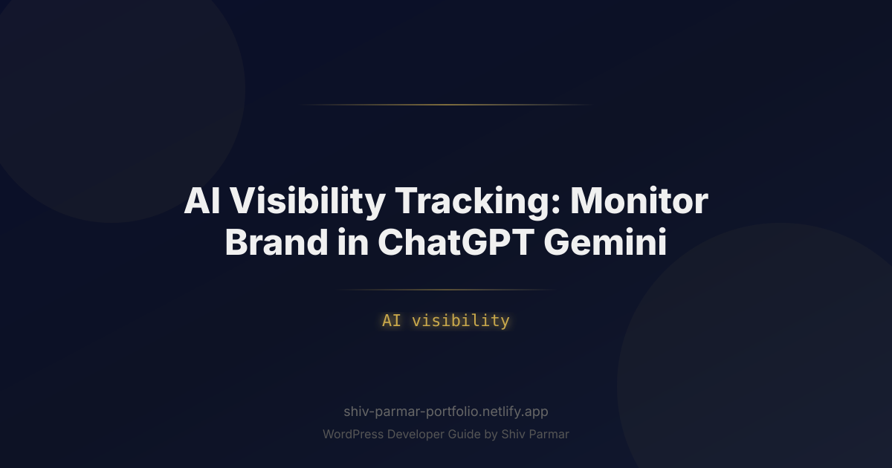

AI Visibility Tracking: Monitor Brand in ChatGPT | Shiv Parmar
Table of Contents
Search engine optimization has undergone its most dramatic transformation since the inception of Google. Today's modern buyers no longer scroll through pages of blue links or click through five different websites to evaluate software, consumer products, or business services. Instead, they type complex, conversational prompts into AI engines like ChatGPT, Google Gemini, Claude, and Perplexity, expecting a direct, synthesized recommendation.
When a user asks ChatGPT, "What are the top three cybersecurity platforms for mid-market financial firms?" or prompts Gemini to "Compare the most reliable cloud-based ERP solutions," the platforms do not return millions of links. They generate a curated response featuring specific brand names, key feature highlights, and explicit recommendations. If your company is omitted from that synthesized answer, you do not exist to that prospective buyer.
This fundamental paradigm shift has birthed a critical marketing discipline: AI visibility tracking. To protect market share and capture next-generation search demand, organizations must actively monitor brand presence, sentiment, and citation patterns across the generative AI ecosystem. This comprehensive guide details everything you need to know about tracking your brand in ChatGPT and Gemini, enabling you to measure, analyze, and optimize your modern AI presence.
What is AI Visibility Tracking?
AI visibility tracking is the systematic process of monitoring, measuring, and analyzing how often, in what context, and with what sentiment your brand appears within generative AI responses. Unlike traditional rank tracking—which logs your domain's numerical position on a static search engine results page (SERP)—AI visibility tracking measures your brand's presence inside non-deterministic, conversational model outputs.
Large Language Models (LLMs) such as OpenAI's GPT-4o, Google's Gemini 1.5, and Anthropic's Claude 3.5 do not rely solely on traditional inverted indexes. Instead, they generate answers using a combination of trained parametric memory and real-time retrieval-augmented generation (RAG). As a result, tracking your brand in these environments requires monitoring multiple distinct dimensions:
- AI Mentions: The frequency with which your brand, product names, or executive leaders are explicitly named in response to industry-relevant prompts.
- Share of Model (SoM): The percentage of AI-generated responses in your vertical that feature your brand compared to your direct competitors.
- Sentiment & Context: The qualitative tone (positive, neutral, negative) and positioning attributes (e.g., "affordable," "enterprise-grade," "legacy," "innovative") assigned to your brand.
- Citation & Source Attribution: The specific web pages, review platforms, media outlets, and databases that web-grounded AI search engines (like SearchGPT or Gemini Grounding) reference to justify their recommendations.
By capturing these metrics over time, marketing teams can move beyond guesswork and treat generative AI platforms as measurable acquisition channels.
Why AI Visibility Tracking Matters in 2026
The transition from traditional web search to AI-driven discovery is no longer a futuristic trend; it is the baseline of modern digital behavior. As zero-click searches continue to dominate standard search engines, users rely heavily on synthesized summaries. Understanding why AI visibility tracking is essential requires examining three structural shifts in digital discovery.
1. The Rise of Zero-Click Synthesis
Traditional search engines operate on a middleman model: a user searches for a query, and the search engine presents links to third-party destinations. Generative search engines resolve the user's intent directly within the chat interface. If a user receives a comprehensive comparative table of your product category inside ChatGPT, they may never visit a blog post or landing page. If your brand tracking relies exclusively on Google Search Console or Google Analytics 4, you remain entirely blind to thousands of potential customers engaging with your brand inside AI models.
2. High-Intent Conversational Queries
Search queries submitted to AI models are significantly longer, more nuanced, and closer to a purchasing decision than standard Google searches. Rather than searching for "best CRM software," buyers prompt AI with hyper-specific requirements: "We are a 200-person remote healthcare company needing a HIPAA-compliant CRM that integrates with Salesforce and costs under $50/user/month. What are our best options?"
When an AI model recommends three brands in response to a prompt like this, the conversion intent of that user is extraordinarily high. Tracking whether your brand appears in these high-value conversational forks is vital for revenue protection.
3. Algorithmic Differences Between SEO and AI Engines
Traditional SEO focuses on backlinks, technical site health, domain authority, and target keyword density. Generative AI engines prioritize semantic relevance, entity consensus, vector similarity, and real-time citation availability. Understanding these differences highlights why standard SEO tools cannot accurately measure AI brand performance.
| Dimension | Traditional Search (SEO) | AI Search & LLM Discovery (GEO) |
|---|---|---|
| Primary Objective | Rank #1 on static SERPs for targeted keywords | Achieve inclusion in synthesized recommendations |
| Core Metric | Organic Position, CTR, Impressions | AI Mentions, Share of Model (SoM), Sentiment |
| Information Retrieval | Index crawling and keyword matching | Parametric memory + RAG (Web Search Grounding) |
| Output Structure | List of links, snippets, and ads | Synthesized prose, comparative tables, code |
| Primary Data Sources | On-page HTML, backlink profiles | Web-wide entity consensus, digital PR, review sites |
Step-by-Step Guide to Tracking Your Brand in ChatGPT and Gemini
Establishing an end-to-end framework for AI brand tracking requires a structured methodology. Below is a step-by-step implementation guide to monitor your brand across OpenAI's ChatGPT and Google's Gemini models effectively.
Step 1: Develop a Comprehensive Prompt Taxonomy
You cannot track your brand across every possible string a user might type. You must construct a structured prompt matrix that mirrors your buyer personas' journeys. Divide your prompts into four main categories:
- Category Discovery Prompts: High-level broad queries (e.g., "What are the top enterprise analytics tools?").
- Comparative & Evaluative Prompts: Mid-funnel consideration queries (e.g., "Compare Product A vs Product B for mid-market retail").
- Feature/Constraint Prompts: Specific technical or operational requirements (e.g., "Which accounting software offers native SOC2 compliance and open REST APIs?").
- Branded Direct Prompts: Direct queries about your firm (e.g., "What are the pros and cons of using Brand X?").
Step 2: Automate Prompt Execution via APIs
Manual testing inside the ChatGPT or Gemini chat windows yields unreliable results due to personalized chat histories, active sessions, and browser cookies. To collect clean, reproducible tracking data, you must run your prompt matrix programmatically through model APIs (e.g., OpenAI API and Google AI Studio API).
Because LLM responses are probabilistic—meaning the output can vary slightly each time—your script should query each prompt multiple times (e.g., 5 to 10 runs) across configured parameters like temperature to establish statistical consistency.
Below is a practical Python script demonstrating how to programmatically evaluate brand tracking and presence across OpenAI's ChatGPT (GPT-4o) and Google's Gemini API:
import os
import json
import openai
import google.generativeai as genai
# Configure API Keys
OPENAI_API_KEY = os.getenv("OPENAI_API_KEY")
GEMINI_API_KEY = os.getenv("GEMINI_API_KEY")
openai.api_key = OPENAI_API_KEY
genai.configure(api_key=GEMINI_API_KEY)
# Define tracking configuration
TARGET_BRAND = "AcmeCloud"
PROMPT_LIST = [
"What are the best cloud security platforms for enterprises in 2026?",
"Recommend top software for managing Kubernetes clusters securely.",
"Which security vendors provide automated compliance reporting?"
]
def check_openai_visibility(prompt, brand):
client = openai.OpenAI()
response = client.chat.completions.create(
model="gpt-4o",
temperature=0.2,
messages=[
{"role": "system", "content": "You are a helpful software procurement assistant."},
{"role": "user", "content": prompt}
]
)
content = response.choices[0].message.content
brand_mentioned = brand.lower() in content.lower()
return {"platform": "ChatGPT (GPT-4o)", "prompt": prompt, "mentioned": brand_mentioned, "response": content}
def check_gemini_visibility(prompt, brand):
model = genai.GenerativeModel('gemini-1.5-pro')
response = model.generate_content(
prompt,
generation_config={"temperature": 0.2}
)
content = response.text
brand_mentioned = brand.lower() in content.lower()
return {"platform": "Google Gemini", "prompt": prompt, "mentioned": brand_mentioned, "response": content}
def run_ai_brand_audit():
results = []
for prompt in PROMPT_LIST:
# Check ChatGPT
gpt_res = check_openai_visibility(prompt, TARGET_BRAND)
results.append(gpt_res)
# Check Gemini
gemini_res = check_gemini_visibility(prompt, TARGET_BRAND)
results.append(gemini_res)
return results
if __name__ == "__main__":
audit_data = run_ai_brand_audit()
print(json.dumps(audit_data, indent=2))
Step 3: Calculate Share of Model (SoM) and Sentiment Scores
Once raw responses are collected, process the text to extract high-level metrics. Compute your Share of Model (SoM) using the formula:
Share of Model (%) = (Total Prompts Mentioning Your Brand / Total Category Prompts Tested) * 100
Next, pass the generated text containing your AI mentions through an NLP sentiment classifier or a lightweight LLM prompt to evaluate qualitative brand perception. Store responses under three sentiment designations:
- Positive/Recommended: The model explicitly recommends your brand as a market leader or ideal choice.
- Neutral/Listed: The model includes your brand in a bulleted list without distinct praise or endorsement.
- Negative/Critical: The model flags your brand alongside major drawbacks, high pricing, security issues, or outdated architecture.
Step 4: Audit Web Citations and RAG Footprints
When ChatGPT (via SearchGPT or browsing features) and Google Gemini generate real-time answers, they cite live web pages. Monitoring which external domains feed these models is critical for reverse-engineering their selections.
Inspect the output links associated with your industry prompts. Track recurring domains in a source index table. You will frequently find that LLMs rely on a small cluster of authoritative publications, long-tail forum discussions (such as Reddit or TechCrunch), G2/Capterra comparison summaries, and specialized review portals. If your brand is absent from these key seed sources, it will remain absent from real-time AI search results.
Step 5: Establish Continuous Monitoring Workflows
AI visibility is dynamic. Models undergo continuous retraining, fine-tuning, and real-time web indexing updates. Running a one-time audit provides only a baseline snapshot. Implement automated daily or weekly tracking scripts that output structured metrics into a central analytics platform (such as BigQuery, Looker, or PowerBI).
Set up automated alerting triggers when:
- Your brand's overall Share of Model drops below a defined baseline (e.g., falling below 40% across target prompts).
- Negative sentiment attributes (e.g., "expensive," "difficult to implement") appear in more than 15% of brand mentions.
- A primary competitor suddenly captures majority visibility inside Gemini or ChatGPT recommendations.
Best Practices for Maximizing AI Visibility
Tracking your AI visibility reveals your current performance baseline; optimizing it requires targeted tactical adjustments. To increase the frequency and positive context of your AI mentions across ChatGPT, Gemini, and other models, adhere to the following best practices.
1. Establish Strong Entity Authority
LLMs rely heavily on Knowledge Graphs and structured entity relationships to recognize brands. Ensure your organization has a clear, unambiguous entity footprint across authoritative web registries. Maintain accurate listings on Wikidata, Crunchbase, Wikipedia (if eligible), standard business directories, and major industry review databases. Use standardized organization Schema.org markup across your primary web properties to clarify your core product offerings, target audience, and brand parentage.
2. Cultivate Third-Party "Consensus"
Generative AI models do not trust self-promotional brand claims on your homepage in isolation. They evaluate overall web consensus to verify facts. If your website claims you are "the #1 fastest CRM," but industry reviews, Reddit discussions, and independent technology blogs state your platform is sluggish, the LLM will echo the third-party consensus.
Invest heavily in digital PR, review acquisition on third-party aggregators, independent analyst coverage, and user discussion management. Winning positive mentions across unbiased third-party sites directly translates into positive AI mentions within conversational outputs.
3. Publish Structured Direct-Answer Content
Modern RAG engines scan web content to extract direct, high-density facts. Content formatted in vague marketing jargon is difficult for LLMs to parse and re-synthesize. Structure technical documentation, landing pages, and blog posts with clear semantic headings, concise summaries, clear data tables, and explicit Q&A formats.
For example, including clear comparative tables (e.g., "Brand A vs. Brand B Feature Comparison") directly on your site increases the likelihood that web-grounded models like Gemini will parse and utilize your structured data when users ask comparative queries.
4. Optimize for Long-Tail Persona Prompts
Targeting broad single keywords (e.g., "marketing software") is less effective in generative search. Analyze the detailed long-tail scenarios real buyers present to conversational bots. Create dedicated web content, case studies, and documentation addressing specific vertical niches, operational limits, integration setups, and industry compliance frameworks. This ensures your brand surfaces when users present highly detailed prompt criteria.
Common Mistakes to Avoid in AI Brand Tracking
Because AI tracking differs fundamentally from traditional web analytics, organizations frequently fall into predictable strategic traps. Avoid these common pitfalls to maintain accurate data and actionable insights.
1. Relying Exclusively on Single-Query Manual Audits
Opening ChatGPT once a month, typing a single prompt, and making strategic decisions based on that single answer leads to skewed conclusions. LLM responses are non-deterministic and can vary based on model versions, system prompt variations, temperature settings, and real-time RAG fetching. Always run multiple automated iterations across a wide range of prompt variations to compute statistically valid visibility scores.
2. Conflating SEO Rank Tracking with AI Visibility
A website that ranks #1 on Google for a traditional search keyword will not automatically dominate ChatGPT or Gemini recommendations for the same topic. Traditional rank tracking measures organic URL positions; AI visibility tracks synthesized conversational inclusion. Measuring only your traditional SERP positions will leave significant blind spots in your AI channel performance.
3. Ignoring Negative Sentiment and Contextual Framing
Securing an AI mention is only half the battle. If an AI engine mentions your product in 80% of category prompts but consistently adds a caveat—such as "Brand X is a popular choice, though users frequently complain about poor customer support and hidden fees"—your high visibility is damaging your pipeline. Always pair quantitative volume metrics with qualitative sentiment analysis.
4. Focusing on a Single AI Ecosystem
While OpenAI's ChatGPT commands substantial market share, Google Gemini powers native Android features, Google Workspace tools, and AI Overviews across standard search results. Anthropic's Claude and specialized search platforms like Perplexity hold significant enterprise market share. Tracking your brand exclusively on ChatGPT while ignoring Gemini or Claude provides an incomplete view of your true market presence.
5. Attempting to "Keyword Stuff" Prompt Data
Generative AI engines use vector embeddings to interpret the semantic meaning behind text rather than relying on exact keyword matches. Trying to manipulate LLMs by repeating exact keyword strings across your site will fail. Focus on building comprehensive topic coverage, factual clarity, high domain authority, and verified third-party consensus.
Conclusion
As conversational platforms like ChatGPT and Google Gemini continue to reshape how consumers discover products and services, mastering AI visibility is becoming the new frontier of digital marketing. Proactive brand tracking across these large language models allows you to identify sentiment trends, analyze share of voice, and ensure that your narrative remains accurate and compelling. By systematically monitoring your AI mentions, you can spot emerging opportunities, fix factual inaccuracies, and position your brand as the preferred answer to relevant user prompts.
However, securing high visibility across generative engines requires more than just monitoring; it demands an authoritative, technically sound digital foundation. Structured data, lightning-fast load speeds, and well-architected content are essential for AI crawlers to ingest and surface your site's information accurately.
If you're ready to modernize your online platform and prepare your business for the future of search, Shiv Parmar is available for custom WordPress development work worldwide. From technical SEO optimization and custom theme engineering to robust site architecture, Shiv can help you build a web presence primed for the AI era. Reach out today to start building a future-proof website for your brand.